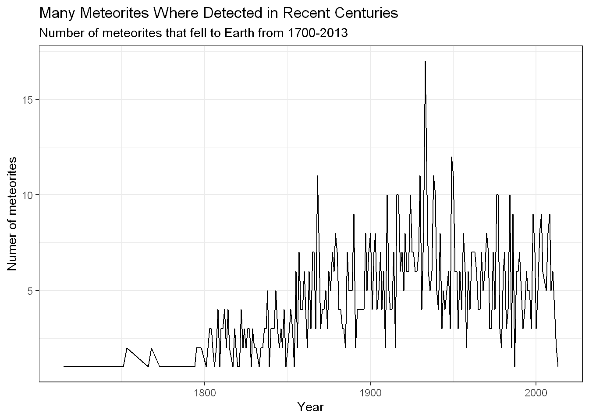
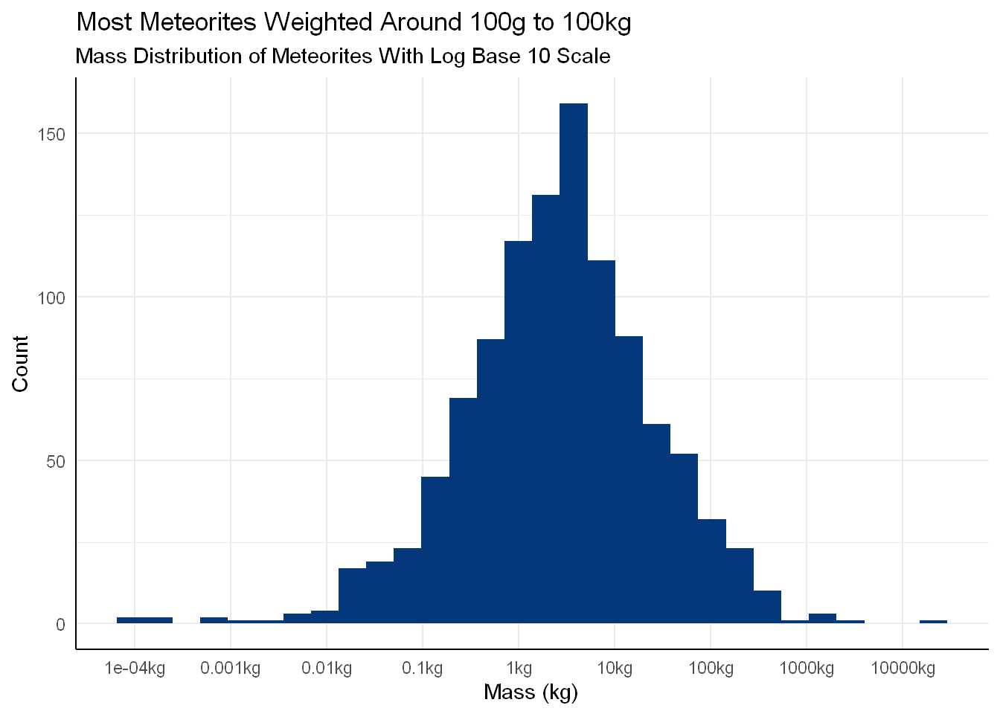
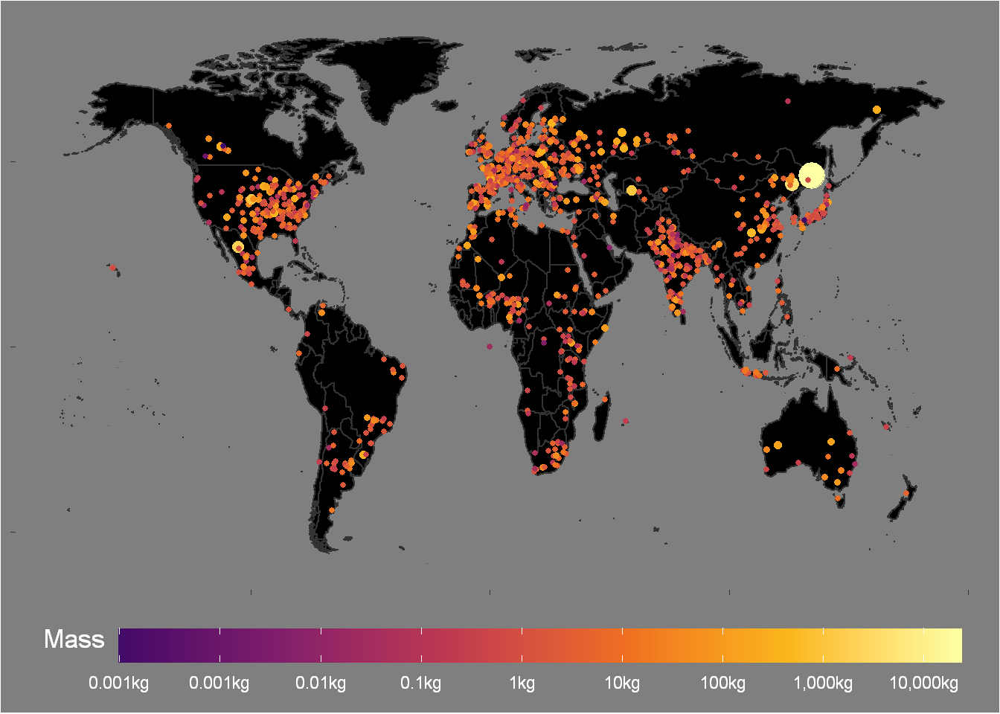
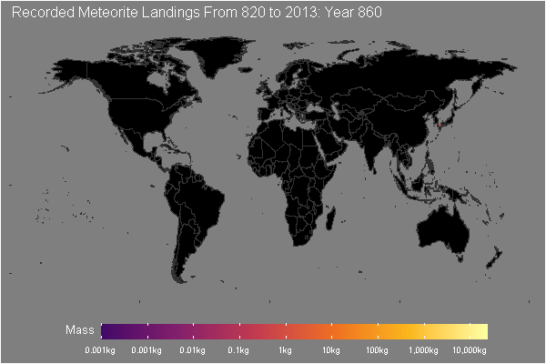

We will explore the dataset posted on 2019-06-11 edition of Tidy Tuesday. Here is the link to original Tidy Tuesday post: Meteorites
First we will quickly discuss the differences between a meteoroid, meteor, meteorite:
Meteoroids are small space rocks that come from bigger rocks such as comets or asteroids.
Meteors are meteoroids that enter the Earth’s atmosphere and burn up. This can produce meteor showers. These are usually objects that we see with a tail in the sky.
A meteorite is a meteor that has survived the Earth’s atmosphere and landed on the ground.
library(tidyverse)
library(gganimate)meteors <- readr::read_csv("https://raw.githubusercontent.com/rfordatascience/tidytuesday/master/data/2019/2019-06-11/meteorites.csv")There can be lots that can be discovered from the data, however, today we will only focus on the year and meteors that fell to Earth.
meteors## # A tibble: 45,716 x 10
## name id name_type class mass fall year lat long geolocation
## <chr> <dbl> <chr> <chr> <dbl> <chr> <dbl> <dbl> <dbl> <chr>
## 1 Aachen 1 Valid L5 21 Fell 1880 50.8 6.08 (50.775, 6.~
## 2 Aarhus 2 Valid H6 720 Fell 1951 56.2 10.2 (56.18333, ~
## 3 Abee 6 Valid EH4 107000 Fell 1952 54.2 -113 (54.21667, ~
## 4 Acapul~ 10 Valid Acapu~ 1914 Fell 1976 16.9 -99.9 (16.88333, ~
## 5 Achiras 370 Valid L6 780 Fell 1902 -33.2 -65.0 (-33.16667,~
## 6 Adhi K~ 379 Valid EH4 4239 Fell 1919 32.1 71.8 (32.1, 71.8)
## 7 Adzhi-~ 390 Valid LL3-6 910 Fell 1949 44.8 95.2 (44.83333, ~
## 8 Agen 392 Valid H5 30000 Fell 1814 44.2 0.617 (44.21667, ~
## 9 Aguada 398 Valid L6 1620 Fell 1930 -31.6 -65.2 (-31.6, -65~
## 10 Aguila~ 417 Valid L 1440 Fell 1920 -30.9 -64.6 (-30.86667,~
## # ... with 45,706 more rowsFirst we will clean the data and focus only on the meteorites that fell.
meteorites = meteors %>%
filter( fall == "Fell") %>%
mutate( mass = mass / 1000 ) %>% # convert from grams to kg
select(name,mass,year,lat,long) %>%
na.omit()meteorites %>%
filter(year >= 1700) %>%
count(year) %>%
ggplot(aes(x=year,y=n))+
geom_line( )+
theme_bw()+
labs(title="Many Meteorites Where Detected in Recent Centuries",subtitle="Number of meteorites that fell to Earth from 1700-2013",x="Year",y="Numer of meteorites")
We notice that there have been many sightings of fallen meteorites in recent centuries, and we see that that there has been a gradual uptick in the number discovered up until the 1940s. This could be due to more people being able to watch the skies or better access to technology as time passes.
Though in the past 50 years there hasn’t been as many detections, which can come across as odd, since due to modern and sophisticated technology, surely we would be able to detect more meteorites? The answer could lie in the fact that meteorites are just really rare events.
Let’s look at the mass distribution of meteorites
custom_length = 10^seq(-4,4,1)
ggplot(meteorites, aes(x = mass)) +
geom_histogram(bins = 30, fill = "#05377b") +
scale_x_log10(label = paste0(modify(custom_length , function(x) {if (x > 1) {
trunc(x )
} else{
x
}
})
, "kg") ,
breaks = custom_length ) +
labs(title = "Most Meteorites Weighted Around 100g to 100kg ",subtitle = "Mass Distribution of Meteorites With Log Base 10 Scale", x = "Mass (kg)", y = "Count")+
theme_minimal()+
theme(panel.grid.minor.x = element_blank(),
axis.line = element_line())
The masses of meteorites varied quite drastically, but when placed on a sensible scale, we see that the most common meteorite weight was about 5kg. The meteorites can weigh as little as a 0.1 grams to an enormous 10,000kg, which is the same weight as the bell of Big Ben!
Now we will create an animation depicting the year and location of meteorites that fell to Earth. First we will create the static plot version.
world <- map_data("world")
p = ggplot() +
geom_map(data = world %>% filter(region != "Antarctica") ,
map = world, aes(x = long, y = lat, map_id = region),color = "grey20",fill = "black") +
geom_point(
data = meteorites %>% filter(year >= 1) ,
mapping = aes(x = long,y = lat,group = year,col = log(mass, (10) ),size=mass )
) +
scale_color_viridis_c(
option = "B",
begin = 0.2,
end = 1,
breaks = c(-4, -3, -2, -1, 0, 1, 2, 3, 4),
labels = c(
"0.001kg",
"0.001kg",
"0.01kg",
"0.1kg",
"1kg",
"10kg",
"100kg",
"1,000kg",
"10,000kg"
)
) +
labs(
x = NULL,
y = NULL,
col="Mass"
) +
guides(size="none")+
theme_dark() +
theme(legend.position = "bottom",
legend.key.width = unit(3,'cm'),
legend.title = element_text(vjust=1),
plot.background = element_rect(fill = "grey50"),
legend.background = element_rect(fill = "grey50"),
title = element_text(size = 13, colour = "white"),
legend.text = element_text(color = "White"),
panel.grid.minor = element_blank(),
panel.grid.major = element_blank(),
axis.text = element_blank()
)## Warning: Ignoring unknown aesthetics: x, yp
Now we still animate the graphic using gganimate. Note that we will also add a title that changes over time. Note, If you are following along then this took several minutes to render.
anime = p+ transition_time(year) +
labs(title = 'Recorded Meteorite Landings From 820 to 2013: Year { trunc(frame_time) }')+
shadow_mark(alpha=0.1)
animate(anime, width = 600, height = 400,fps=30,end_pause = 60,duration = 30)
We used the year variable to be the transition_time for our plot. Year { trunc(frame_time) } allows us the denote in the title what the year is. if trunc() was not used, then we would have years with decimals, which doesn’t look great in our plot, and it’s not very interpretable. There were also a few visual options such as width and height to help the make the plot look better.
To learn more about gganimate, you can look at this youtube video, by the creator of the gganimate package, for a quick overview.
From the graphics, we see many recorded landings in densely populated areas such as: Europe, The East Coast of America, and India.
We notice that there are spots in the world that do not have any recorded meteorite landings. This includes places like: Northern Australia, Western China, Northern Russia, The Amazon, and so on .It seems unlikely that meteorites will not land in uninhabited places across the globe and we do not have many instances of recorded landings in the ocean, so we could attribute these blank areas as places where nobody was around to detect the falls.
Absence of evidence is not evidence of absence, or in other words, just because we didn’t see it, it doesn’t mean it didn’t happen.